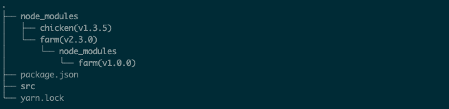

Author: Mike Reviewer: Chris M
Coding is fun, there's no doubt about it.
But do you know what else is? Testing! Code maintenance! Keeping dependencies in sync!
No? Only for me? Well, it might not be fun for many of you, but to keep your library/app working properly you'll need to adapt and at least try some of it.
If you ever wrote a JavaScript library and published it on NPM (Node Package Manager), at some point of its development you might have experienced that it exhibited an inconsistent behaviour and you didn’t know the root cause of it. It was working fine for you and some of your coworkers/contributors, but crashing for everybody else. Do you want to know why?
There is a high chance it was caused by unhandled dependencies in your project. This article addresses that problem and focuses on a very specific task: lockfile maintenance. I'll show you:
yarn.lock (lockfile) isDisclaimer: all of the mentioned below is based on true events. No developers were harmed during implementation and/or for the purposes of this article
For the last few months, I've been working at Stoplight as a part of 11Sigma crew on an open-source library called Elements.
An issue emerged in our library integration that made us challenge our belief that our dependencies are under control. In short, our app crashed because of a bug in a dependency’s dependency. Despite fixing the nested dependency, the issue remained to be unsolved.
Fortunately, it turned out to be a non-issue on a fresh install of Elements.
Unfortunately, that meant that we weren't testing what users were using at a given moment.
In order to understand this issue fully though, we first need to learn about the lockfile itself and how dependencies are installed in a project.
If you are familiar with how a lockfile works , feel free to skip to “Problem - second look”
To understand why the topic of this article is important to you, it is necessary to know what a lockfile is and how it works. Although it can have different names depending on whether you use npm or yarn, the premise is pretty much the same. Because I'm using yarn though, I'll use yarn.lock as an example in this article.
When you run yarn in your project, two things can happen:
yarn.lock) is generated (if there isn't any) according to the contents of package.jsonyarn.lockImportant: When you install dependencies in your application or library, only the top-level
yarn.lockfile is respected. Lockfiles within your dependencies will be ignored.
In short:
When present in the project,
yarn.lockis the main source of information about the current versions of dependencies in a project.Yarnuses that information to check if it needs to update anything - it compares dependency versions currently installed in a project (listed inyarn.lock) to version restrictions inpackage.jsonand updates packages if needed. Information from the lockfile can be further used by other users to create a repeatable environment elsewhere.
yarn.lockWhenever you run yarn (which is an equivalent of running yarn install) upon a fresh install, a yarn.lock file is generated. It lists the versions of dependencies that are used at the time of the installation process. That means it looks into your package.json and depending on the versioning syntax, it will install your project dependencies, then their dependencies, then their dependencies, and so on...
For more info about dependency versioning check this link
Let's say your project uses two dependencies: chicken and farm. Both of these are external packages, over which we don't have any control
// package.json (your project)
dependencies: {
"chicken": "^1.2.0",
"farm": "2.3.0"
}
and farm package uses pinned (specific) version of chicken:
// package.json (`farm` package)
dependencies: {
"chicken": "1.0.0",
(...)
}
This will result in your project requiring two versions of chicken:
farm dependencypackage.json. This will vary upon a fresh install depending on what's the latest version after 1.2.0 - the ^ symbol allows changes that do not modify the left-most non-zero element in the version number. For this particular version range it means 1.2.0 <= installed version < 2.0.0. To give an example - if v1.2.4 is available at the moment of (fresh) installation of your project, it will be installed. Same for v1.5.8, v1.7.2, v1.9.9, but not for v2.0.0Both of these versions will be present in the yarn.lock
The folder structure will look like this:

At this point you might’ve noticed that this isn’t a perfect situation - first of all, if a sub-dependency (chicken) has a bug introduced in one of its versions, and dependency that uses it (‘farm’) doesn’t pin the version - it could introduce a bug to your project.
It has a bright side to it though - if your project would require chicken and use that same/matching version range, e.g.
dependencies: {
"chicken": "^1.2.0",
(...)
}
you won’t install two versions of the chicken package, decreasing the size of your project and preventing potential conflicts between different versions of the same package.
Things are a bit easier to explain when it comes to updating the lockfile. It can happen in 3 situations - when the dependency:
This can happen in two ways - via yarn CLI (which updates both package.json and yarn.lock):
# adding dependencies
> yarn add PACKAGE-NAME
# removing dependencies
> yarn remove PACKAGE-NAME
# upgrading all dependencies
> yarn upgrade
# upgrading specific package
> yarn upgrade PACKAGE-NAME
# Adding the `--latest` flag at the end of ‘upgrade’ commands makes yarn ignore the specified version range and install the latest version(s).
You can also manually modify the contents of package.json and then run yarn install. If yarn doesn't detect any differences between versions in package.json and yarn.lock, it won't install anything new and/or update yarn.lock
Question: you installed project dependencies at some point. Time has passed, maybe a few of your project dependencies released a new version, you also decided to add a few other dependencies in the meantime. What will happen if you run yarn?
Answer: Well, yarn will of course install dependencies freshly added to package.json, that are not yet installed and/or not present in yarn.lock. But if you have ”dependecy_A”:“v1.3.5” already in your yarn.lock, latest version available on NPM is ”dependency_A”:“v.1.4.0” and version range in package.json is ^1.2.0 - will yarn upgrade to the latest version? No, it won’t. v1.3.5 falls into the requirement of being ^1.2.0, so yarn doesn’t see the need of upgrading the package.
Let’s come back to the original issue for a moment:
- An integration of
Elementsin Storybook (a tool for building an testing UI components) was broken because of a bug present inElementsdependency,JSV(JSON Schema Viewer)JSVwas using a dependency calledJST(JSON Schema Tree) (which is effectively a sub-dependency ofElements) with a non-pinned (non-specified) version (^1.1.0) listed in its package.json.- New version of JST (
1.1.2) which falls into the requirement of being^1.1.0included the fix that would solve our problem- Even though the
JSTversion could be1.1.0or above,Elementsitself would still hang for us. Installing dependencies (by runningyarnwithin theElementsdirectory) didn’t help either. Why?
The answer at this point is actually pretty simple - even though both of the JSV and JST versions are not pinned and should update upon a fresh install, our local yarn.lock file was blocking these updates, having v1.1.0 of JST in itself.
As explained in paragraphs above - when present, yarn.lock serves as a main source of information about which versions of packages should be installed. If that’s the case, can we just deploy it with the rest of the package when releasing a new version?
That depends on what your project is:
There seems to be an agreement as to whether the lockfile should be committed. There's an excellent post on yarnpkg covering this topic (both for applications and libraries) if you want to understand the reasoning behind it.
We'll focus on libraries, such as Elements. Plus, committing the lockfile alongside the application pretty much solves the issue of unwanted updates.
Because only the top-level lockfile is respected (the one form users project root directory), yarn will look into the used library's package.json and install the packages with versions described there. Unless you pin each dependency in your library to an exact version, users' projects might end up having different sub-dependencies depending on the time of installation.
So are we doomed? Kind of. Users will always be the first people to discover a breaking change in a dependency (and hopefully file a bug report). To give you some perspective:
let’s assume you library have 20 external, sub-dependencies each of this sub-dependency can get a new release anytime thousands (potentially) of users install your library each day each such installation will fetch the latest sub-dependencies if any of those sub-dependencies introduce a bug, your users might be affected the above will happen, unless your development team has a way to regularly test that sub-dependency upgrades don’t break your library
By now, we’ve established that yarn.lock left alone without any maintenance can introduce confusion about the current state of the project/library, as developers might end up having different versions of dependencies installed locally on their machines.
Let’s take a look at possible solutions for keeping the lockfile up to date.
The first approach we looked at was Dependabot - a well-known tool for bumping dependencies. It checks for possible updates, opens Pull Requests with them, and allow users to review and merge (if you're confident enough with your test suite you can even set auto-merge)
We'd been already using Dependabot for security updates and it served the purpose really well!
Why did we decide not to go with it?
Unfortunately, it misses (at least at the time of writing this article) the ability to have duplicate updates for different allow types. That means you can't have e.g. daily updates for dependencies and weekly updates for devDependencies in the same project. In our case it was about not being able to daily update to versions that include security-related changes and all of the other changes (features, fixes, major updates) on a weekly basis using the same tool.
Also, as it turned out, later on, having new PR for each dependency update is a bit of pain.
After figuring out that Dependabot does not allow us to do the above, we've decided to look for alternatives. One of the most promising ones (and open-source!) was Renovate.
Even though the basic principle of bumping dependencies is the same, the tool itself seems very powerful and customizable. It has 3 applications (Github, Gitlab, and self-hosted), highly granular settings (you can even set custom rules for auto-merging of PR), and allows opening a PR for a batch of dependencies, instead of for each one.
As we are using GitHub for version control, the supported application for it was an obvious choice. Because our usage was a bit unorthodox - updating only yarn.lock and not package.json in order to have a representation of current users environments and at the same controlling the version ranges - we wanted to test it on the self-hosted version first, to avoid unnecessary PRs created by Renovate, or even worse - unwanted merges.
This is where we hit a wall with Renovate - even though it has a great range of options, we didn't manage to configure it the way we wanted - update ONLY yarn.lock once a week and create a single PR.
Because of that, we decided to not spend more time on publicly available solutions, and handle the lockfile maintenance ourselves.
You may ask: "Why did you even bother with setting those dependency management systems? Isn't it easier to just run yarn upgrade on everything and call it a day?"
And you would be partially right. The thing is that these systems probably do the exact same thing under the hood but put more attention to the possible failures and corner cases. And just because they are already battle-tested, we decided to check them first. Custom solutions built from scratch, in general, tend to be more fragile than the commercially available ones.
Since neither Dependabot nor Renovate met our needs at a time though, our way out was writing a custom CI job that:
Our toolchain was:
CircleCI for CI/CDgit and GitHub for VCSYarn as a package managerJest for testingCoffee® for energy### bash
$ git checkout main
$ export BRANCH_NAME=feat/lockfile-maintenance-ci-job-$(date +"%m-%d-%Y") && git checkout -b $BRANCH_NAME
$ yarn upgrade
$ git add yarn.lock
$ git commit -m "chore: weekly lockfile maintenance"
$ git push --set-upstream origin $BRANCH_NAME
$ BODY='{"head":''"'${BRANCH_NAME}'"'',"base":"main","title":"Weekly lockfile maintenance"}'
&& curl -X POST
-H "Accept:application/vnd.github.v3+json"
-u $GIT_AUTHOR_NAME:$GH_TOKEN https://api.github.com/repos/stoplightio/elements/pulls
-d "$BODY"
The premise of this is:
git fetch as this is being run in a fresh CI job each time) and create a feature branch with a name corresponding to the lockfile maintenance $ git checkout main
$ export BRANCH_NAME=feat/lockfile-maintenance-ci-job-$(date +"%m-%d-%Y") && git checkout -b $BRANCH_NAME
yarn.lock according to package.json - this mimics what happens for users upon a fresh install $ yarn upgrade
$ git add yarn.lock
$ git commit -m "chore: weekly lockfile maintenance"
$ git push --set-upstream origin $BRANCH_NAME
$ BODY='{"head":''"'${BRANCH_NAME}'"'',"base":"main","title":"Weekly lockfile maintenance"}'
&& curl -X POST
-H "Accept:application/vnd.github.v3+json"
-u $GIT_AUTHOR_NAME:$GH_TOKEN https://api.github.com/repos/stoplightio/elements/pulls
-d "$BODY"
Both $GIT_AUTHOR_NAME and $GH_TOKEN are secrets from CircleCI - make sure you don't hard code your credentials in the CI config file and/or the command itself.
workflows:
version: 2
test-and-release:
...
perform-lockfile-maintenance:
triggers:
- schedule:
cron: "0 3 * * 1"
filters:
branches:
only:
- main
jobs:
- lockfile-maintenance
Make sure you define the job as well:
jobs:
lockfile-maintenance:
docker:
- image: circleci/node:12
steps:
- checkout
- run:
command: |
### THIS IS A PLACE FOR THE COMMAND FROM PREVIOUS PARAGRAPH
By default, CircleCI runs workflows against all commits from all branches. This is definitely not the behavior we want to have for lockfile maintenance. The desired outcome is that it will run once a week against the main branch. We also don't run any tests at this stage, as the PR created against the main branch will trigger the test-and-release workflow that is being run for each branch and contains a test suite, checks linting, and builds a project to see if there are no crashes.
That's where cron jobs come in handy. We first define that our perform-lockfile-maintenance workflow will be triggered by one (test yours using this online tool) by putting cron job description in the triggers/schedule section. Then we apply an additional filter to it, so it only targets main at any given moment.
As for scheduling, we decided to go with Monday before work (Central European Time), so it is the first thing we look into at the beginning of the week. A contributor opens a PR containing changes made to yarn.lock, approves if it looks right, and merges the change to main.
And that's it! You've just set up your first lockfile maintenance flow!
There are few more things you can do to improve your confidence even more:
So there you go, we have just gone to a dependency hell and came back alive!
I believe that what I have described above will help you encounter fewer issues when developing your library, especially if you don't have a full team dedicated to testing bugs.
But even if I didn't convince you to do a weekly/monthly/whatever dependency bump I hope that this article gave you a strong understanding of the lockfile itself, why it is important when talking about compatibility across different machines, and seeing that lockfile maintenance does not have to be a terrible chore that takes an unreasonable amount of time.
If you feel like this article added some value to your current skill set though, please consider resharing it on your social media.
If you’d like to learn more about our open-source tool, Elements, which was a basis for this article, visit our website.